The connector pin-out for the Trillium 120P is such that the same wiring can provide XYZ or UVW. The choice of output is determined by the voltage on (Pin D, which when 5-15V with respect to the digital ground (Pin R) provides UVW output, and when open or OV provides XYZ output.
The consequences and detection of recording UVW rather than XYZ will be discussed here rather than the problems associated with a broken U, V or W internal sensor.
I recently looked at the surface wave dispersion across North America from the 2012/08/26 Brawley, California earthquake. While determining group velocities using do_mft I noticed some inconsistencies with three stations of the South Carolina network.
The next figure shows the CO network stations (CASEE, HODGE, PAULI, JSC and BIRD) in relation to stations of the US network (GOGA and NHSC) and TA network (153A, 154A, 155A, 156A, KMSC, W52A, W53A, X52A, X53A, X54A, Z53A, Z54Z and Z55A).
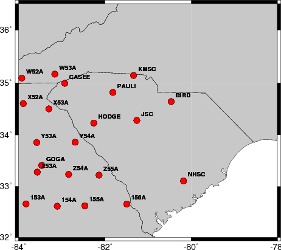
It was the study of this earthquake that lend to this detailed tutorial.
While performing group velocity analysis using do_mft I noted that the expected dispersion has a morror image.
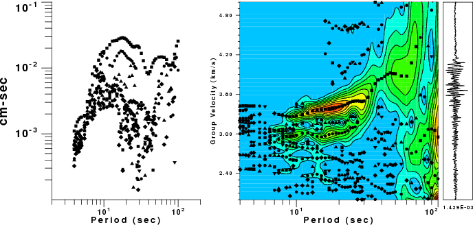
This double dispersion feature could be due to
The presumably rotated traces show the problem.
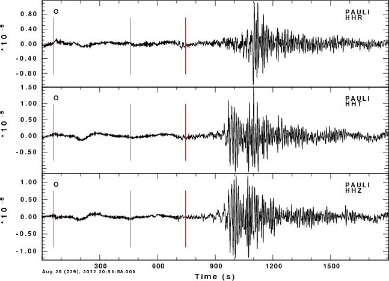
Note that the Z and T traces are very similar. For these north American paths, my experience is that the Z and R should be similar in terms of the envelope and that the T should arrive earlier.
The comparisons will show the ground velocity in nanometers/s obtained by removing the instrument response with the gsac command
transfer from polezero subtype PZFILE to vel freqlimits 0.003 0.005 FHL FHHwhere FHH is the Nyquist frequency and FHL is one-half the Nyqujist frequency. In the plots, the traces for stations BIRD, HODGE and PAULI are plotted in red.
The first plots focus on the teleseismic P-wave. The traces have been low-pass filtered at 0.2 Hz.
| Teleseismic P: lp c 0.2 n 3 | ||
| Z | R | T |
| 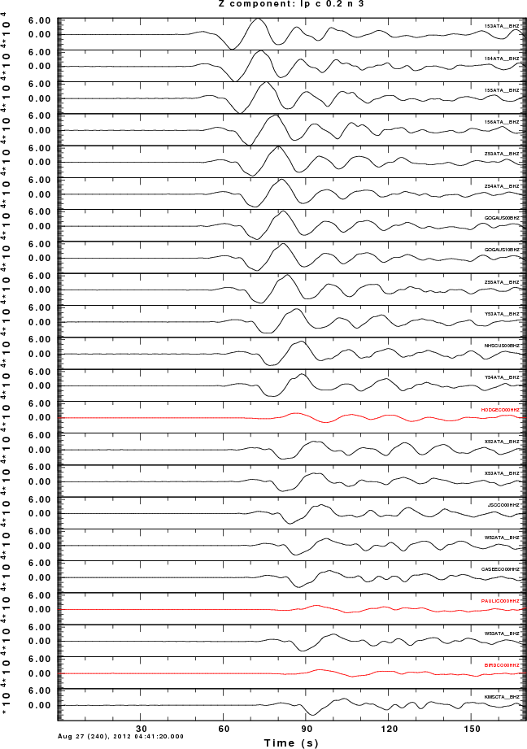 | 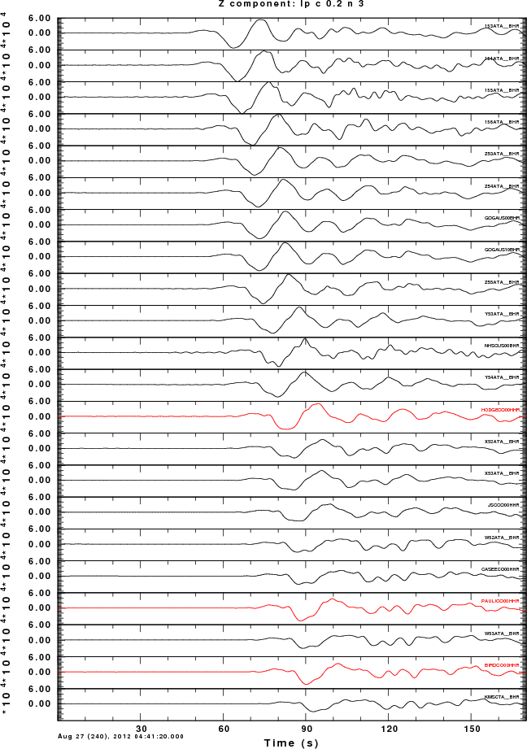 | 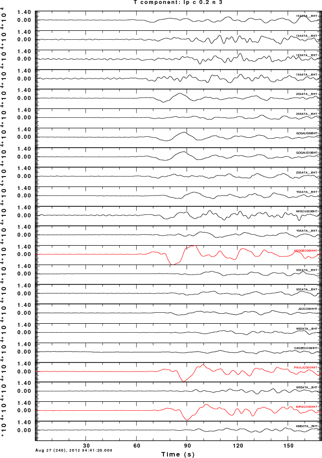 |
The obvioous features on the Z is that stations HODGE, PAULI and BIRD have different amplitudes, arrival times and polarities compared to the P-wave puale at the other stations. The traces have been plotted at true amplitude to also look for gain problems. Only a distance dependence of amplitude is seen for the other stations.
Nothing odd stands out on the R components. HODGE, PAULI and BIRD stand out on the transverse component as being different, although other stations, Z53A, GOGA look odd.
The next set of plots focus on the surface wave.
| Long period surface wave lp c 0.01 n 3 | ||
| Z | R | T |
| 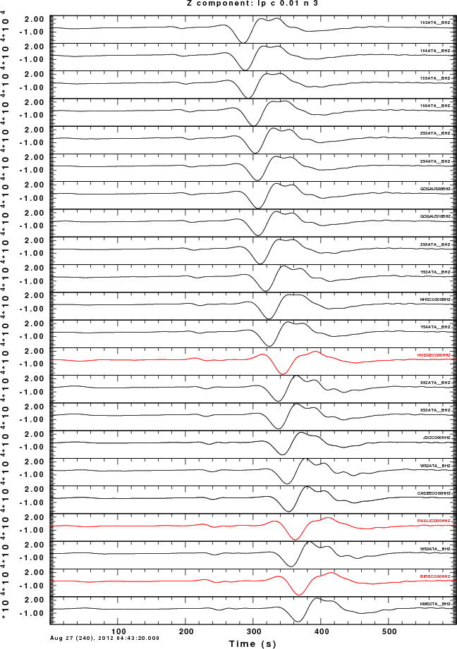 | 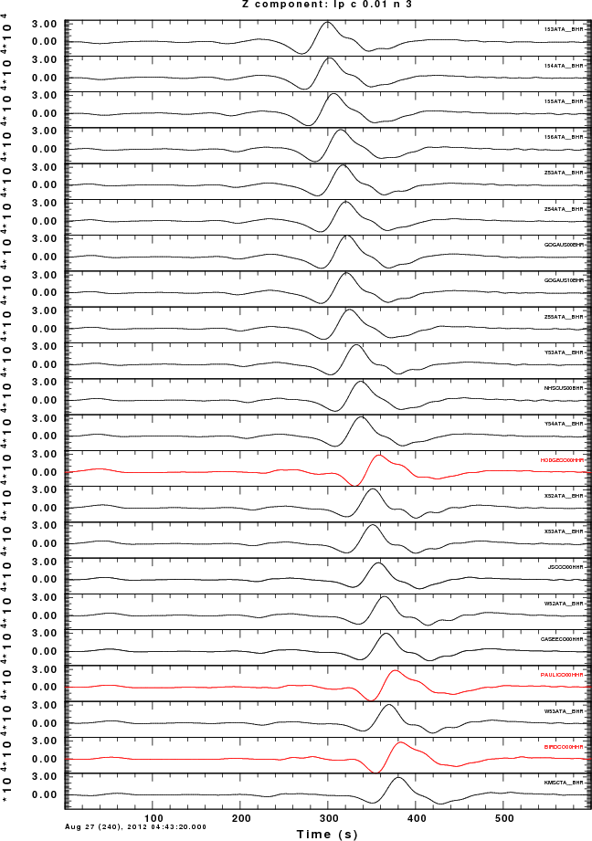 | 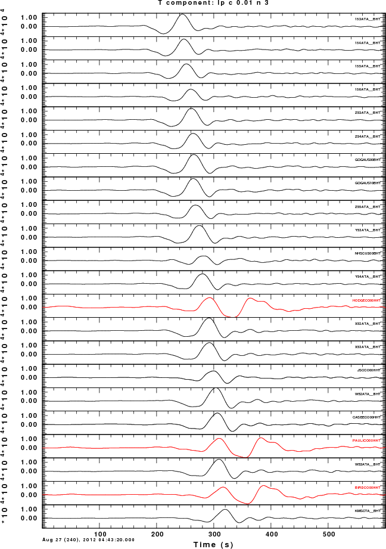 |
The waveforms of HODGE, PAULI and BIRD differ in shape and arrival time on the Z and R components. The corresponding waveforms on the T component are extremently different.
As seen in these examples, the difference in displaying UVW instead of ZNE are subtle. We will ahve to demonstrate that UVW recording is occurring at HODGE, PAULI and BIRD.
The characteristics of the instrumentation at the CO network stations are given in the following table.
| Station | Sensor | Digitizer | Evaluation |
| BIRD | Trillium 120P | Q330SR | Problem |
| CASEE | Trillium 120P | RT-130 | OK |
| HODGE | Trillium 120P | Q330SR | Problem |
| JSC | Trillium 120P | RT-130 | OK |
| PAULI | Trillium 120P | Q330SR | Problem |
The problem stations all have the Q330SR recorder. So perhaps the wiring assumptions were not satisfied for this recorder.
A quick fix is to read in the Z, N and E recordings and than tho change the CMPINC and CMPAZ in the Sac files to the following values:
| Component | CMPINC | CMPAZ |
| Z | 54.7 | 210 |
| N | 54.7 | 330 |
| E | 54.7 | 90 |
Note that such a hack implicitly assiumes that the instrument response of the Z, N and E channels are identical. This asusmption is usually true.
I modified the CMPINC and CMPAZ in the Sac headers for BIRD, HODGE and PAULI as indicated above.
The comparison of observed Z R T traces for the California earthquake are as follow:
| Long period surface wave lp c 0.01 n 3 | ||
| Z | R | T |
| 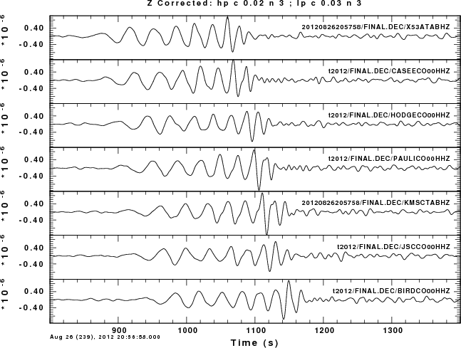 | 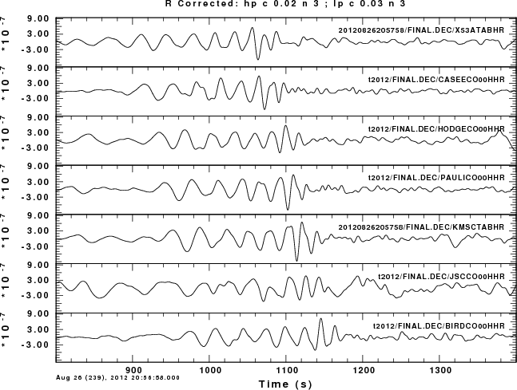 | 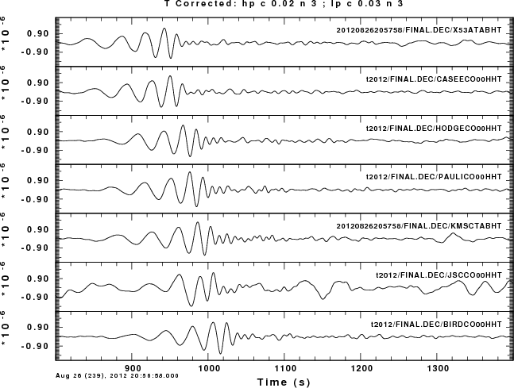 |
Although is it difficult to follow individual pahse, we not that the waveforms have the proper shapes and amplitudes. The consistent short duration and earlier arrival times on the transverse component indicates that the Love wave has been isolated. I could nout use lower frequencies for the comparison because the earthquake was only an Mw=5.6.
We see now that the waveforms of HODGE, PAULI and BIRD agree in shape, arrival time and amplitude with neighboring stations.
The results for the Offshore El Salvador earthquake are as follow:
| Long period surface wave lp c 0.01 n 3 | ||
| Z | R | T |
| 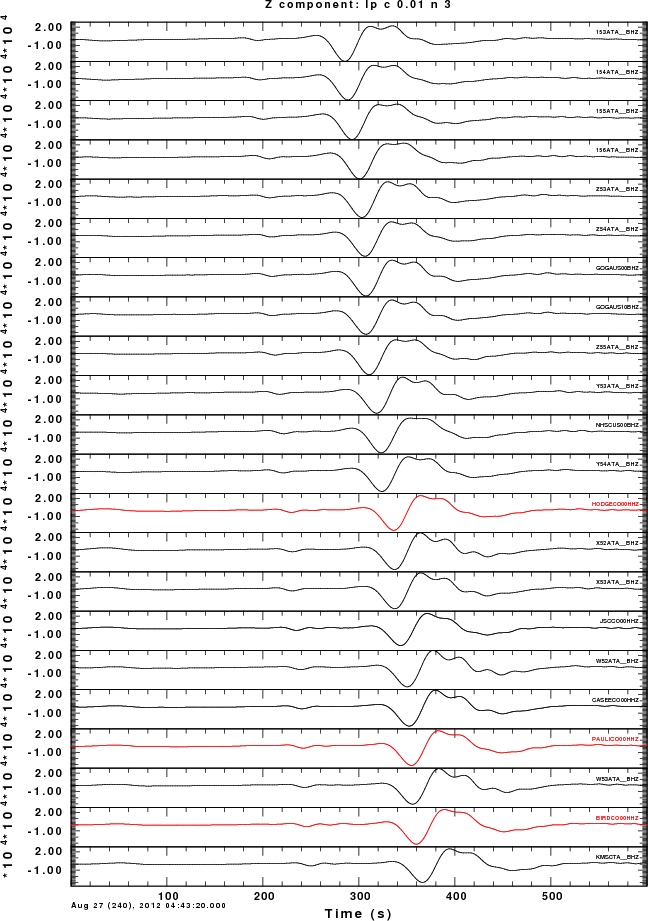 | 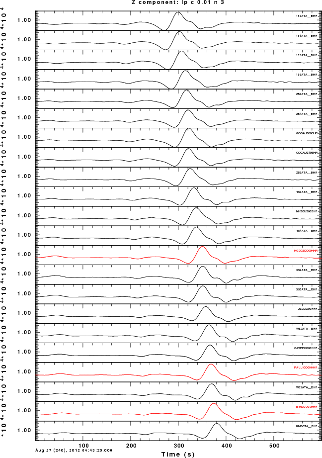 | 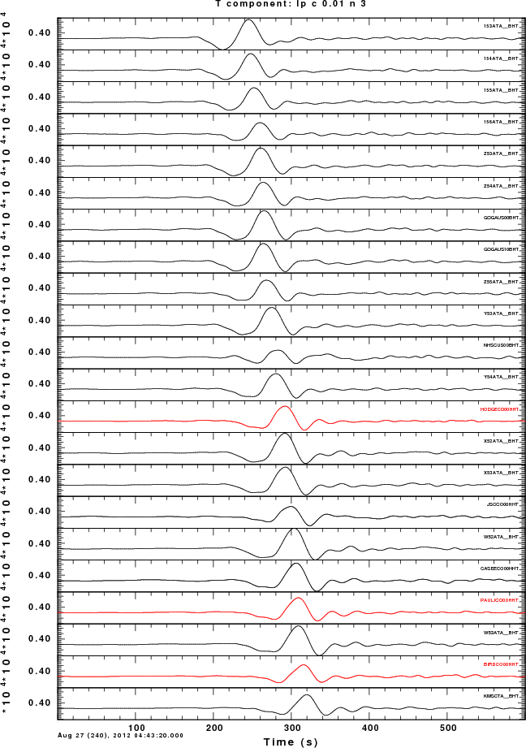 |
We again see that the waveforms of HODGE, PAULI and BIRD agree in shape, arrival time and amplitude with neighboring stations.
This test involving earthquakes at different back azimuths to the stations incidates that the problem was properly identified and that the fix works properly.
Until the problem is corrected, one should not attempt to use automatic determinations of receiver functions from HODGE, BIRD or PAULI. Fortunately there are no receiver functions for these stations at the EARS web site http://ears.iris.washington.edu/.
This caution also applies to using these stations for source inversion, dispersion determination or receiver function studies until the problem is address or the hack described above is used.